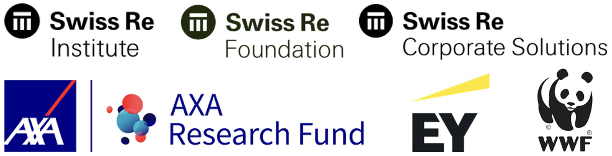

About NASCENT-Peru
Team
ETH Zurich
| Prof. Dr. Adrienne Grêt-Regamey | |
| Prof. Dr. Loïc Pellissier | |
| Benjamin Black | |
| Chenyu Shen | |
| Manuel Kurmann |
Wyss Academy for Nature
| Prof. Dr. Edouard Davin | |
| Prof. Dr. Armando Valdés-Velásquez | |
| Dr. Jan Göpel | |
| Miguel Saravia |
Université de Lausanne
| Prof. Dr. Antoine Guisan |
Université Grenoble Alpes
| Dr. Ignacio Palomo |
Finances
The project is funded as part of the Biodiversity and Ecosystem Services Scenario modelling challenge financed by the Swiss Re Foundation, Swiss Re Institute,Swiss Re Corporate Solutions, EY, WWF and the AXA Research Fund.

Contact
Benjamin Black, ETH Zurich, PLUS